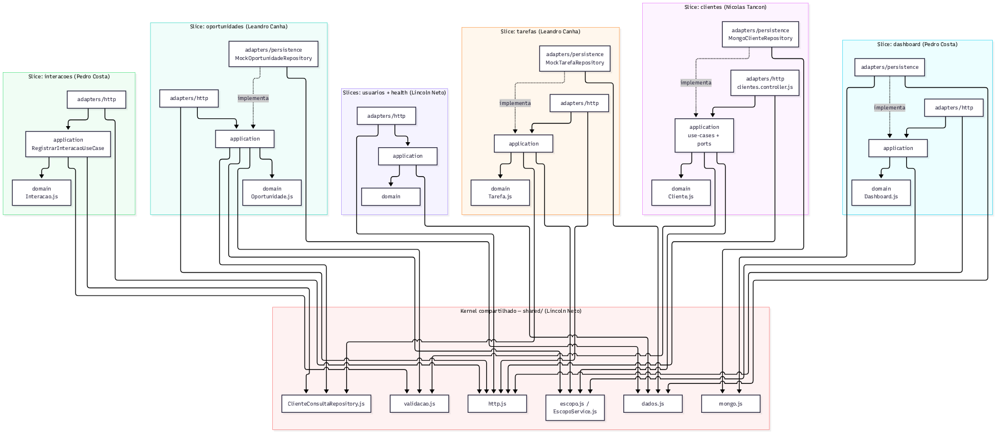
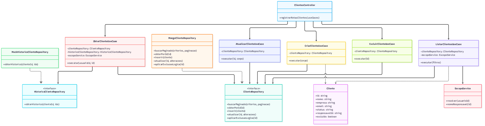
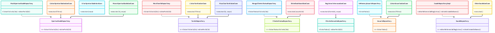

O enunciado do TDE 2 pediu para aplicar três padrões de arquitetura e design — Vertical Slice Architecture, Clean Architecture e SOLID — no backend do projeto Mini CRM que o grupo já vinha construindo no PJBL, usando IA Generativa e seguindo exatamente a terminologia apresentada em aula.
Em vez de organizar o código por camada técnica global (todos os controllers juntos, todos os services juntos, todos os repositories juntos), cada funcionalidade vira uma fatia que carrega tudo que precisa — endpoint, regra, persistência — ponta a ponta. O ganho é coesão local: mudar uma funcionalidade tende a ficar concentrado em um módulo, em vez de atravessar várias pastas técnicas.
Organiza o código em camadas concêntricas — Entities (regra de negócio pura), Use Cases (regra da aplicação), Interface Adapters (tradução entre o mundo externo e o núcleo) e Frameworks & Drivers (banco, web, frameworks) — com uma regra única: a Dependency Rule. O código-fonte só pode apontar para dentro, nunca o contrário. O núcleo não pode saber se existe Mongo, Azure Functions ou qualquer outro detalhe técnico.
Cinco princípios de design orientado a objetos: S (uma razão principal para cada classe mudar), O (estender sem reescrever o que já está estável), L (um substituto preserva o contrato do original), I (interfaces focadas no que o cliente realmente usa) e D (código de alto nível depende de abstrações, não de detalhes voláteis).
O backend (Azure Functions, Node.js) tinha 7 áreas de rota organizadas
por tipo técnico (functions/ + shared/).
Cada área virou uma vertical slice própria
(api/src/features/<slice>/), e dentro de cada
slice aplicamos as camadas da Clean Architecture:
domain/ (Entities), application/ (Use Cases
e Ports — a interface que o SOLID pede para inverter a dependência),
e adapters/ (Interface Adapters de entrada via HTTP e de
saída via MongoDB ou a massa mock). O que sobrou de comum entre
slices (conexão com o banco, resposta HTTP padronizada, a regra de
quem vê o quê) virou o kernel compartilhado em
api/src/shared/ — o "shared mínimo" que os slides de
Vertical Slice recomendam manter pequeno.
A divisão seguiu o peso de regra de negócio de cada área, não uma rota para cada pessoa — algumas slices são bem maiores que outras.
| Aluno | Slices | Por quê |
|---|---|---|
| Nicolas Tancon | clientes |
A maior slice — único CRUD completo, com persistência real no MongoDB Atlas |
| Leandro Canha | oportunidades, tarefas |
Regras de funil de vendas e vencimento calculado |
| Pedro Henrique Z. Costa | dashboard, interacoes |
Agregação de indicadores e histórico do cliente |
| Lincoln Neto | usuarios, health, kernel compartilhado |
Slices mais simples + a infraestrutura que as outras 6 usam |
clientesorder/api,
order/application, order/domain,
order/infrastructure), mas com os nomes que a gente já
usa em português. Quero um port ClienteRepository e o
Mongo implementando ele, pra dar pra trocar por um fake nos teste
sem precisar do banco."
O que saiu: a entidade Cliente (regra pura, sem Mongo),
o port ClienteRepository e dois adapters
(MongoClienteRepository para o CRUD de verdade,
MockHistoricoClienteRepository para o histórico que
ainda vem da massa mock), 5 use cases — um por operação, aplicando
SRP — e o clientes.controller.js só traduzindo HTTP
para chamada de use case, sem nenhuma regra de negócio dentro.
oportunidades e tarefasOrder.addItem()
do slide da Clean Architecture."
O que saiu: domain/Oportunidade.js com
moverEtapa, promoveClienteParaAtivo e
foiReaberta isoladas — testadas com node --test,
sem mock de Mongo nem de Azure Functions — e o mesmo tratamento para
domain/Tarefa.js com a regra de "vencida é sempre
derivado da data, nunca gravado". Os repositórios das duas slices
leem a massa mock, igual antes — nenhuma persistência nova.
dashboard e interacoes
A resposta foi que sim, feriria — cada slice fica mais acoplada se
importar classe de dentro de outra. A solução: dashboard
define os próprios ports de leitura (ClienteStatusRepository,
OportunidadeConsultaRepository,
TarefaConsultaRepository,
UsuarioConsultaRepository), implementados contra o
kernel compartilhado — nunca contra a slice de oportunidades ou
tarefas diretamente. As contas de ranking e indicadores por etapa
viraram funções puras em domain/Dashboard.js, testadas
isoladas.
usuarios, health e o kernel compartilhadoescopoDaRequisicao)
recebia o request inteiro do Azure Functions — isso não é tipo o
núcleo dependendo de um detalhe externo, que o slide da Clean
Architecture fala pra nunca fazer?"
Exatamente o que o slide da Clean Architecture chama de Regra das
Dependências ("código-fonte só deve apontar para dentro"). A
correção: resolverEscopo(usuarioId) passou a receber só
a string do id, e quem lê o request.query agora é o
controller HTTP de cada slice — o kernel não conhece mais o tipo de
request do Azure Functions. Esse ajuste também virou o
EscopoService, injetado nos use cases das outras 6
slices, e o ClienteConsultaRepository (leitura mock de
cliente usada por oportunidades, tarefas e interações).
O código ficou mais verboso — muito mais arquivos para a mesma funcionalidade — que é exatamente o trade-off que os slides do SOLID e da Clean Architecture avisam: "excesso de interfaces/classes" e "overengineering em sistemas simples" são os riscos citados, e um CRM pequeno como este é, em parte, o caso onde isso pesa mais que ajuda. Aplicamos mesmo assim porque o objetivo aqui é o exercício acadêmico dos três padrões, não o tamanho ideal de código para este projeto específico.
Não foi possível rodar a suíte completa de 30 casos
(api/scripts/testar-api.mjs) no ambiente onde a IA
trabalhou, porque exige MONGODB_URI de um cluster
MongoDB Atlas de verdade. As 5 rotas que não dependem do Mongo
(health, usuarios, oportunidades,
tarefas, interacoes) foram conferidas
manualmente e responderam no formato esperado; os 17 testes unitários
de domínio (um por regra de negócio isolada) passam em todas as 7
slices. A validação final contra o MongoDB real fica para quem tiver
acesso às credenciais do Atlas do grupo.
As 7 vertical slices, cada uma com suas camadas internas (domain/application/adapters), e o kernel compartilhado na base. As setas sempre apontam para dentro — nenhuma slice depende de outra slice diretamente.

clientes
A slice mais completa: a entidade Cliente, os 5 use
cases (um por operação), o port ClienteRepository e sua
implementação real contra o MongoDB — a Dependency Inversion fica
visível aqui: os use cases dependem da interface, nunca da
implementação concreta.

Mesma notação, cobrindo oportunidades, tarefas, dashboard, interações, usuários e health, para fechar o diagrama de classes do backend inteiro.
